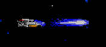

Master System - R-Type
 :::. Por Matheus T. - Artigo cedido pela equipe do QG Master, com adaptações. Clique aqui para ler o artigo original.
:::. Por Matheus T. - Artigo cedido pela equipe do QG Master, com adaptações. Clique aqui para ler o artigo original.
Olá amigos! Me chamo Matheus e sou um gamer louco por jogos dessa geração 8-bits e procuro sempre estar aprendendo um pouco mais sobre este incrível mundo de pixels, e hoje vos apresento um shooter que marcou a sua época pela sua dificuldade e que até hoje ele vem recebendo novos títulos, o R-type.
Historia
Tudo começa quando criaturas do império Bydo estão tentando invadir e conquistar o nosso planeta, sim meu amigo, foi isso que você entendeu, a nossa querida galáxia está à beira de um colapso, até que surge uma nova esperança. A liga de defesa da Terra decidiu que você, sob o comando da nave de combate espacial R-9(nomeada Arrowhead) impeça que isso ocorra. Agora vamos ao que interessa.
O jogo
R-Type era um dos shooters mais conhecidos na época, e o Master System foi um dos sortudos à receber a conversão desse clássico inesquecível. Ele possui gráficos bem detalhados com bastante variedade de inimigos e cenários, destaque para os chefes que são gigantes. Mas isso acabou saindo um pouco forçado pro nosso Master prejudicando a velocidade do jogo, mas nada que chegue a atrapalhar quem está jogando, e aliás, você vai agradecer em alguns momentos quando isso acontecer, porque o jogo não é moleza não. A jogabilidade é rápida e precisa, responde bem aos comandos do jogador trazendo uma configuração simples mas que funciona. O som é bom com vários efeitos sonoros como tiros, explosões e com músicas bem empolgantes. E você tem a opção (dependendo do emulador que você está usando) de ativar o módulo FM para turbinar a qualidade do som do jogo (vale a pena experimentar), lembrando à todos que essa função é exclusiva da versão japonesa do Master System, o Mark III.
Uma coisa que impressionou na época foi o tamanho dos chefes, e olha que esse é o da primeira fase, mostrando que pra ser gigante não precisa ser da última fase |
O jogo é difícil pra caramba, e não estranhe se você morrer logo na primeira fase, é sério, as fases são lotadas de monstros e tem momentos que o tiro do monstro é tão pequeno que você acaba nem enxergando, ou porque não viu porque tava desviando de outros ou então porque o tiro era da mesma cor do cenário (sério, isso aconteceu comigo). Portanto, uma dica fundamental é você decorar o momento e o ponto em que aparece os monstros e também pegar os power-ups, que ao pegar o primeiro automaticamente surge Force, uma espécie de esfera que fica na frente da sua nave te protegendo dos tiros. E mais, quando você estiver com Force e pegar mais um power-up, o Force também terá tiros próprios, formando com você uma dupla imbatível.
Muitas pessoas não tiveram a oportunidade de ver o primeiro chefe porque travavam nessa parte, e se você não for rápido, nem mesmo Force será capaz de te salvar dessa "roda da morte". |
Aqui você confere a segunda fase do jogo, que se passa num tipo de laboratório.
Fique atento à esses monstros que surgem do chão e do teto. |
Agora que falei de Force, eu vou explicar de uma maneira simples e rápida como pegar os power-ups.
Os power-ups você encontra destruíndo um robô específico, e não se preocupe, ele é fácil de ser identificado e aparece em grandes quantidades, portanto não se preocupe se caso você morrer, logo você recupera tudo de novo.
Esse é o robô que carrega os power-ups. |
Quando destruído surge uma bolinha com uma cor específica, lembrando que são três no total, cada uma com uma função diferente: a de cor azul faz com que Force dispare na frente e nas diagonais, e quando encosta em alguma parede o tiro reflete para outra direção.Temos também a de cor vermelha, que dispara um mega tiro, mas só na frente. E por último, o da cor amarela, que dispara um raio pra cima e pra baixo ao mesmo tempo, e quando encosta no teto ou no chão o raio muda a direção para a direita. Mas é bom lembrar que quando você estiver jogando e não estiver com Force, não importa que bolinha você pegue, Force vai vim pra você mas não vai estar com a função da bolinha que você pegou, ela só vai funcionar quando você pegar outra bolinha de novo.
Esses são os power-ups que Force pode pegar. |
Um detalhe interessante é que quando você pegar mais de 2 power-ups, o Force mudava de forma. |
Mas não é só Force que ganha power-ups, quando você destruir o robô poderá aparecer um ícone com a letra M, S e também uma bolinha prateada com um círculo vermelho.A letra M (missile) faz com que sua nave dispare mísseis de calor, a letra S (speed-up) deixa a sua nave mais rápida e a bolinha prateada funciona assim, quando você pega surge uma pequena esfera que dispara tiros simples, ela fica em cima ou embaixo da nave (isso mesmo, pode pegar até duas que elas vão ficar com você ao mesmo tempo).
 |
|
Aqui você confere os power-ups do R-9. |
Quando você estiver nessa parte (quarta fase) destrua as bolinhas que estão ao redor até chegar aonde a seta está indicando, batendo na parede esquerda você será transportado para uma fase secreta |
Mas uma coisa que era bem legal nesse jogo, e que também foi uma novidade pra época, foi a possibilidade da sua nave carregar o seu tiro, no maior estilo Mega Man (tudo bem que na época em que foi criado o Mega Man 4 ainda não tinha sido lançado, mas não resisti, não tem como não lembrar dele hehehe), basta você segurar o botão 1 por um tempo e soltar o botão, o que ajudava e muito no momento em que a tela lotava de monstros, e tinha também outra coisa que ajudava, apertando o botão 2 você disparava Force contra os inimigos, e se quiser que ele volte é só se aproximar dele ou apertando o botão 2 para ele vir até você, o bom disso é que quando aparecer muitos monstros atrás da nave, você pode soltar Force e fazer com que ele fique atrás de você (sem malícias, eu juro!!).
 |
Olha o tiro do Mega Man aí ! |
Enfim, R-Type é um ótimo jogo e tem tudo o que um jogador gosta, bons gráficos, músicas, um controle que responde bem aos comandos e muita, muita dificuldade, portanto, é um jogo perfeito pra quem procura por desafios no Master, e pra te ajudar, a produtora fez a questão de colocar continue limitado (3 pra falar a verdade), mas nada que um bom código te ajude.
E pra fechar essa análise com chave de ouro, eu revelarei esse segredo: quando você estiver nessa tela, faça 360° graus com o direcional no sentido horário, eu garanto que isso vai te ajudar muito nesse jogo, e quem quiser ouvir as músicas do jogo basta fazer o mesmo procedimento da outra dica, mas agora você inverte a direção que for girar.
Acesse o Trombone e comente sobre essa matéria!


Um dos erros mais imperdoáveis da Sega. Em 90/91 mais ou menos, a Sega ganhou da Tecmo a oportunidade de fazer umas versões do Ninja Gaiden para os seus consoles. Essa chance é comparável ao que Deus fez quando deu o mundo para Adão... bem, o final tanto de Adão quanto da Sega nesse caso são semelhantes.
Albert Odyssey é um dos jogos mais amados pelos fãs do Saturn. Com uma história simples mas rica, dramatica e emocionante, encantou muita gente que naquele inicio da era 32 bits, ainda não estava acostumada com trilha sonora feita com instrumentos de verdade e gráficos cheios de luz e efeitos. Mas, não era para ser assim com esse jogo...